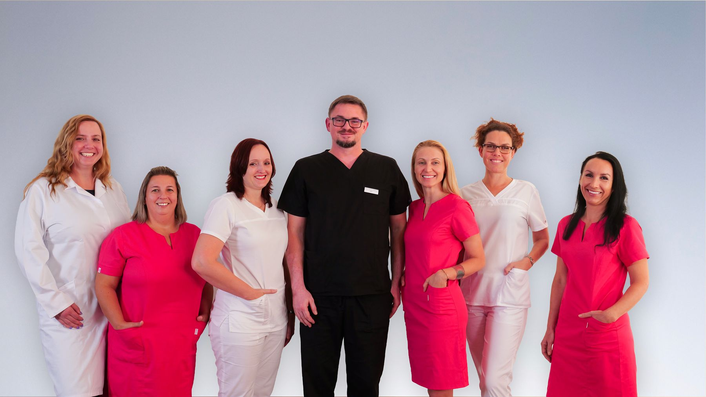
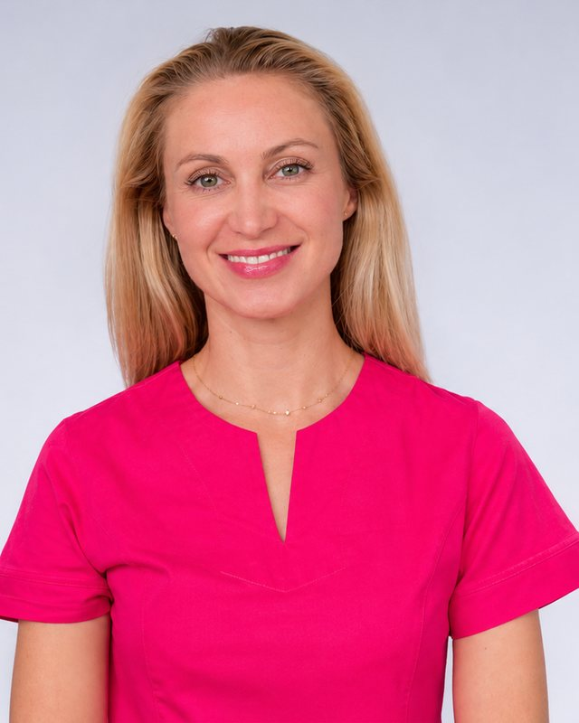
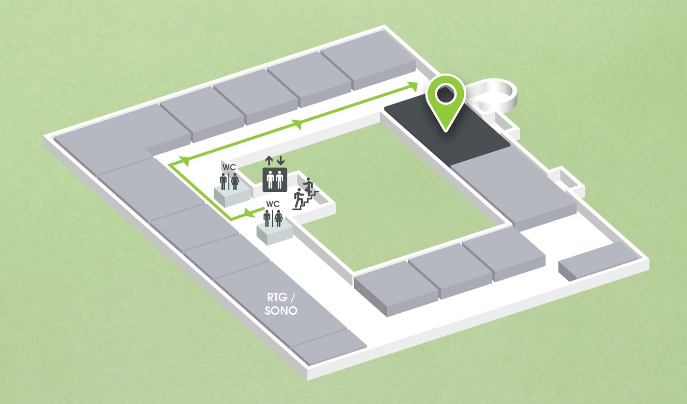
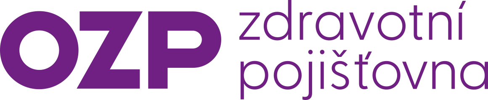
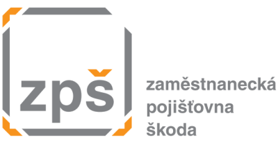

Plicní centrum Spořilov
Jsme moderní plicní ambulance a centrum spánkové medicíny. Specializujeme se na prevenci, diagnostiku a léčbu širokého spektra respiračních onemocnění a poruch dýchání ve spánku. Máme smlouvy se všemi zdravotními pojišťovnami.
Přijímáme nové pacienty, termín obvykle do 14 dnů.

Aktuality
OZP – smlouva uzavřena
Od 1. října 2026 máme smlouvu se zdravotní pojišťovnou OZP (207). Nově proto přijímáme i její pojištěnce, a to v plném rozsahu našich služeb. Děkujeme za trpělivost.
Nedovolali jste se? Zanechte nám vzkaz
Pokud vám hovor nemůžeme přijmout nebo voláte mimo ordinační dobu, přepojíme vás na záznamník. Vaše sdělení evidujeme a ozveme se vám zpět v nejbližší možné době.
Spánkové centrum
Nabízíme služby akreditovaného Centra spánkové medicíny. Poskytujeme všechny typy přetlakové léčby, včetně domácí neinvazivní ventilace.
Více o spánkovém centruKontakty
Online objednání
Medevio
objednání a komunikace s ambulancí
Telefon
(+420) 272 124 444
Když hovor nemůžeme přijmout nebo voláte mimo ordinační dobu, nechte vzkaz na záznamníku. Ozveme se vám zpět v nejbližší možné době.
ambulance@plicnisporilov.cz
Nebo nám napište přes kontaktní formulář.
Adresa
Poliklinika Spořilov, 2. patro
Božkovská 2967/4, 141 00 Praha 4
Bezbariérový přístup
Pacient
Nový pacient – první vyšetření
K prvnímu vyšetření je vhodné, ne však nutné, doporučení ve formě žádanky od praktického lékaře či jiného ambulantního specialisty. Je nutné si přinést:
- kartičku pojištěnce a občanský průkaz,
- seznam dlouhodobě užívaných léků včetně dávkování,
- kopie lékařských vyšetření, případně seznam diagnóz,
- inhalátory a pomůcky pro dechovou rehabilitaci, pokud je používáte.
Máte-li rentgen nebo CT hrudníku z jiného pracoviště, přineste snímky na CD nebo USB, nebo požádejte pracoviště, kde byly pořízeny, o odeslání do systému ePACS – Plicní centrum Spořilov.
Pokud nemluvíte česky ani anglicky, zajistěte si prosím k vyšetření tlumočníka.
První prohlídka může trvat jednu až dvě hodiny. Součástí bývá funkční vyšetření plic, před kterým prosím dodržte pokyny před vyšetřením.
Akutní stav nebo zhoršení
Stavy urgentní a život ohrožující, prosím, řešte cestou zařízení k tomu určených a vybavených – urgentní příjmy nemocnic. Pro léčbu akutního respiračního infektu kontaktujte, prosím, v první řadě svého praktického lékaře nebo jeho zástup. Pokud se k nim nemůžete dovolat, mají dovolenou nebo nemají zástup, můžete využít některou z pohotovostních služeb LSPP. V případě zhoršení chronického stavu plicního onemocnění, pro které jste u nás dlouhodobě léčeni nebo sledováni, domluvte se na dřívějším termínu kontroly.
Používáte inhalátor? Správnou inhalační techniku si můžete ověřit na stránce mujinhalator.cz.
Ordinační hodiny
| Pondělí | 7:30–15:00 |
| Úterý | 8:00–18:00 |
| Středa | 10:00–18:00 |
| Čtvrtek | 8:00–15:00 |
| Pátek | 7:30–13:30 |
| Sobota, neděle, státní svátky | Zavřeno |
Poslední pacient bude ošetřen 30 minut před koncem ordinační doby.
Vyšetření
Funkční vyšetření plic
Kompletní funkční diagnostika na jednom místě: spirometrie, bodypletysmografie, plicní difuze, FeNO a vyšetření dechových svalů.
Více o funkčním vyšetření a pokyny před vyšetřenímLimitovaná polygrafie
Celonoční záznam dýchání a okysličení krve ve spánku, doma ve vlastní posteli. Základní vyšetření při podezření na spánkovou apnoi nebo poruchu dýchání ve spánku.
Více v centru spánkové medicínyScreening karcinomu plic
Preventivní program pro silné kuřáky a bývalé kuřáky. Nízkodávkové CT hrudníku odhalí karcinom v počátečním stadiu, kdy je šance na úspěšnou léčbu nejvyšší.
Více o screeninguRevmatologičtí pacienti
Včasně odhalujeme plicní postižení spojené s revmatickým onemocněním. Před nasazením methotrexátu vždy provádíme vyšetření plicních funkcí a difuze. Na léčbě spolupracujeme s vaším revmatologem.
Před biologickou léčbou
Vyloučení aktivní či latentní TBC před zahájením biologické léčby. Zahrnuje odběr krve, rentgen hrudníku a vyšetření plicním lékařem, případně další vyšetření dle indikace.
Rentgen, odběry a rychlé testy
Rentgen hrudníku přímo na Poliklinice Spořilov (2. patro). Odběry ve spolupráci s laboratoří Vidia Diagnostika v přízemí (6:45–12:00). CRP z kapilární krve s výsledkem do pár minut, v případě potřeby i antigenní testy na covid a chřipku. Odběry a analýza arteriálních krevních plynů.
Náš tým
Naši péči zajišťuje tým lékařů a specialistů s dlouholetou praxí na pracovištích fakultních a krajských nemocnic. Díky tomu vám můžeme nabídnout osobní a zároveň vysoce odbornou péči.
MUDr. Jaroslav Lněnička
Pneumolog a somnolog
Ordinuje: po, st, čt
jaroslav.lnenicka@plicnisporilov.cz

Mgr. Irena Hendrychová
Vrchní sestra
Mgr. Beáta Sommerová
Sestra

Bc. Jana Lněničková
Sestra
Naše pracoviště
Jak se k nám dostanete
Metro C Roztyly, poté autobus 135 na zastávku Hlavní, nebo metro C Budějovická, poté autobus 118 na zastávku Hlavní.
Sídlíme na Poliklinice Spořilov, 2. patro. Přístup k poliklinice i do ambulancí je plně bezbariérový.
Otevřít v Google Mapách
Kontaktní formulář
Vyplňte formulář pro obecný dotaz, žádost o recept nebo objednání na vyšetření. S objednáním, žádostí o recept i dalšími požadavky se na nás můžete obrátit také přes Medevio.
Smluvní pojišťovny
Máme smlouvy se všemi zdravotními pojišťovnami: VZP (111), VoZP (201), ČPZP (205), OZP (207), ZPŠ (209), ZPMV (211) a RBP (213).

207
209Samoplátci platí převodem na účet nebo přes QR kód. Platbu v hotovosti ani kartou nepřijímáme.